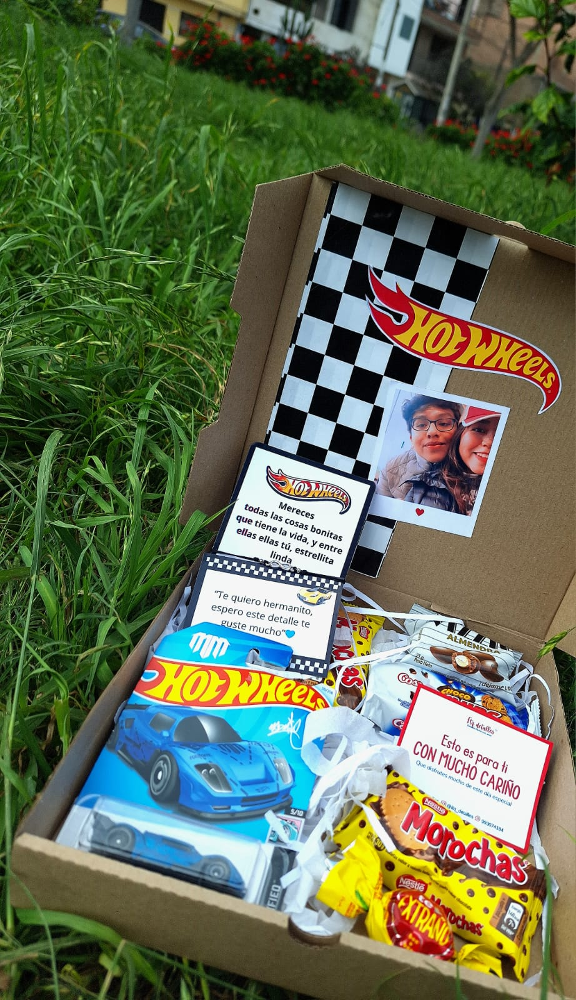
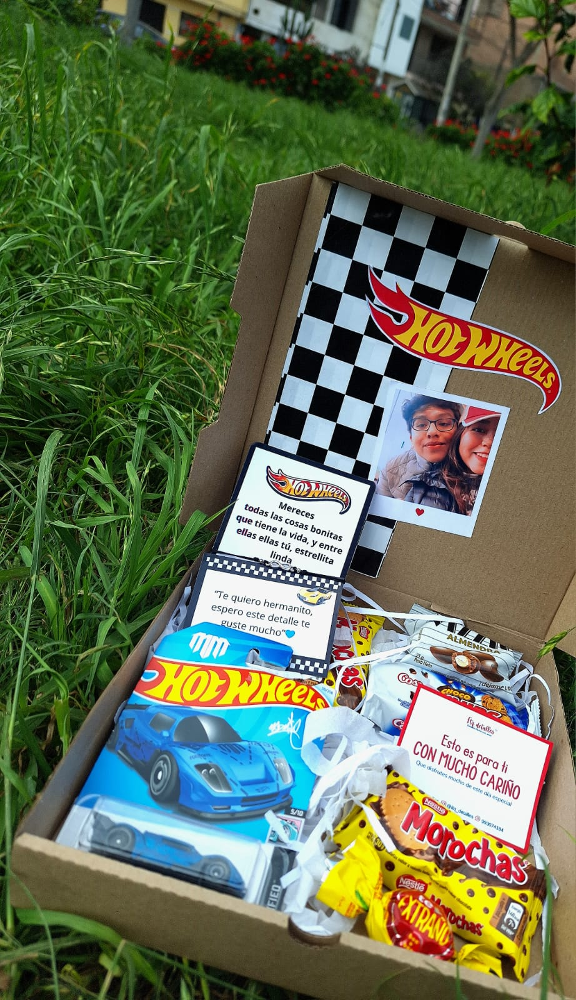
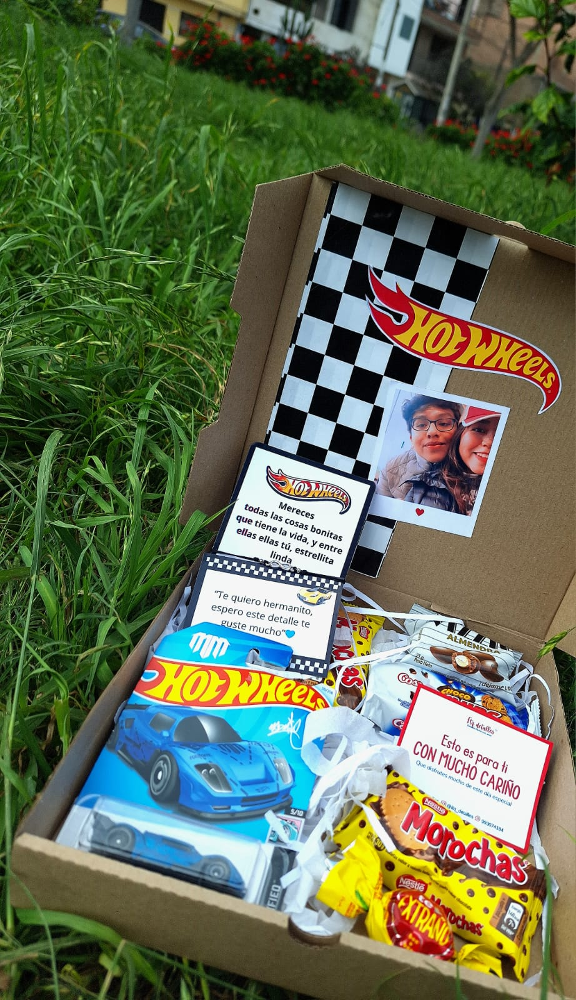

Besticita de mi coraz√≥nnnnnnn, no puedo creer que el tiempo haya pasado tan r√°pido pero desearte un ¬°¬°¬°FELIZ CUMPLEA√ëOSSS!!!ü•≥ü•≥
No tienes idea de lo agradecido que estoy por tenerte a mi lado, ya pasó mucho tiempo y aún recuerdo nuestra primera conver por fb 27/12/2016 (adjunto captura abajo xdd) por si lo olvidaste >:) siempre vi en ti que tenías algo diferente, algo que te hacía resaltar entre tanta gente y es tu enorme corazón ♡. Que aunque te demuestren miles de cosas con acciones malvadas y egoístas, tú siempre supiste confrontarlo y sobrellevarlo de la mejor manera, eso dice muchísimo de ti.
Aún no asimilo la manera en la que te metiste en mi corazoncito, eres parte fundamental en mi vida y espero ESPEROOOO nunca me faltes porque sin ti no podría ser feliz :,) La manera en la que me corregiste las actitudes, comportamientos, facetas y todo todo te lo debo a ti. Con solo verte alegre y riendo no sabes lo feliz que me siento, quisiera que esa sonrisa tuya nunca se apague y si lo haces, aquí estaré para apoyarte y hacer todo lo posible para que estés bien contigo misma ^^
Pasamos por mucho, y aunque a veces discutamos, nos enojemos, nos agarremos de los cabellos xd, siempre llegamos a solucionarlo porque la base de esta amistad es la COMUNICACIÓNNNN, que no se te olvide esa palabrita.
Hermanita linda, jam√°s pens√© que llegar√≠a el d√≠a en que mis pap√°s se alegren de ver o esperar la visita de una personita y esa personita eres t√∫uuu. La manera en la que entraste a nuestro hogar fue algo muy inesperado, y as√≠ como te ganaste mi coraz√≥n, tambi√©n te ganaste el de ellos. Recuerda que cuando necesites ayuda o alg√∫n consejo y yo no est√© cerca para escucharte en persona, ellos siempre estar√°n ah√≠ en la casa, ve con confianza y como te dije, mi casa es y ser√° tu casa üôÇ‚Äç‚Üï
No sabes cuánto espero verte y darte un abrazo, a pesar de que no soy de tener afecto con las personas jahsjs. El mejor de los éxitos para ti, ojalá llegue a alcanzar a ver todas nuestras metas cumplidas y decir "Pasamos por taaaantas cosas, pero al final lo logramos :,)" como te dije todo es un proceso y cuando todo pase recordaremos estos momentos como anécdotas de nuestra vida u.u
Ya de seguro estarás durmiendo al leer este mensaje (pidoperdonnn) pero quiero que hoy sea tu día, pásala increeee, no olvides rotarme las fotes ah, disfrútalo y recuerda que siempre estaré para ti. Felices 21 primaveras a mi terreneitorrrr TE QUIERO MUCHÍSIMOOOOOO <3
